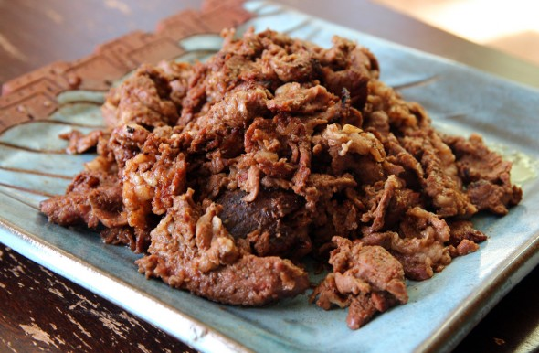

Bulgogi

Description
Delicious bulgogi depends on three things: a good cut of beef, a delicious marinade, and the method you use to cook it. So I am very pleased to release the best bulgogi recipe that I’ve ever made: it has all 3 of these elements.
Ingredients
- 1 pound of beef tenderloin, sliced thinly into pieces ½ inch x 2 inches and ⅛ inch thick
Marinade (for 1 pound of beef):
- ½ cup of crushed pear
- ¼ cup onion purée
- 4 cloves of minced garlic
- 1 teaspoon minced ginger
- 1 chopped green onion
- 2 tbs soy sauce
- 2 tbs brown sugar (or 1 tbs of brown sugar and 1½ tbs rice syrup)
- a pinch of ground black pepper
- 1 tbs toasted toasted sesame oil
- several thin slices of carrot
Steps
- Mix all the marinade ingredients in a bowl.
- Add the sliced beef and mix well.
- You can grill, pan-fry, or BBQ right after marinating, but it’s best to keep it in the fridge and let it marinate for at least 30 minutes, or overnight for a tougher cut of beef. Serve with ssamjang.